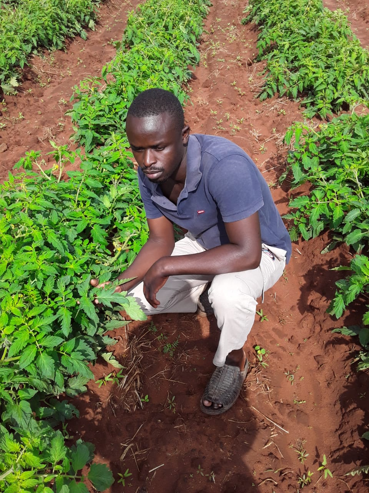

WELCOME TO GREENFIELDS FARMING COMPANY
Good food begins in good soil.
From our fields to your next order, explore the crops we grow and the care behind every harvest.
Explore the land behind our produce.
Every crop has a story worth sharing.
Ask about crops and availability.


OUR FARMOUR PRIDE
01 / WHO WE ARE
More than a farm.
A story of growth.
Good produce starts long before harvest. It begins with the land, the work and the attention given to every crop.
At GreenFields Farming Company, we share the journey from growing fields to freshly gathered produce. Take a closer look at the crops, places and people behind our work.
Get to know GreenFields02 / OUR FRESH PRODUCE
From our fields.
For your table.


03 / BEHIND THE HARVEST
Every harvest
has a beginning.
Discover the journey of a crop, from preparing the ground to gathering produce.
Prepare
Getting the land ready for a new growing season.
Plant
Giving each crop its start in the soil.
Grow
Caring for crops as they develop in the field.
Harvest
Gathering produce when it is ready.

04 / A CLOSER LOOK
Freshness you
can see.
See the fields, crops and harvest moments captured in our original farm photographs.
Explore the Gallery ↗LET'S TALK PRODUCE
Looking for something
fresh from the farm?
Tell us what you need. We'll help you enquire about crops, quantities and availability.